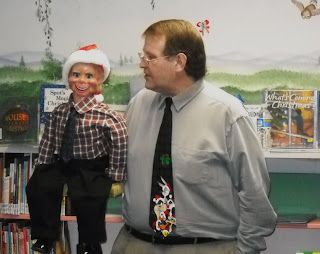

Ventriloquism with purpose
12/26/2009
{kind=link}

From "Dialogue Book #16 Winner" Ron Havens:
You are my ventriloquism Santa. Even if I hadn't won this time you have already given me the best gift of the year. You sent me my first "official" vent figure (see photo). I use him all the time and really enjoy it.
I named him "Ruben Nathaniel Young". His initials (RNY) are representative of the name for the weight loss surgery I had, in July 2009, about the same time you sent him to me. Both Ruben and my surgery are blessings God has given me. I have used him in all my shows since I got him and I have lost 125 pounds since surgery.
Every time I use Ruben "on stage" and mention his full name I am reminded of the commitment I have toward both my ventriloquism ministry and being healthy. Both things are means of doing my part in God's will for my life.
Every time I use Ruben "on stage" and mention his full name I am reminded of the commitment I have toward both my ventriloquism ministry and being healthy. Both things are means of doing my part in God's will for my life.
I want to wish you and your family a Merry Christmas and a Happy New Year.
God Bless,
Ron Havens
God Bless,
Ron Havens